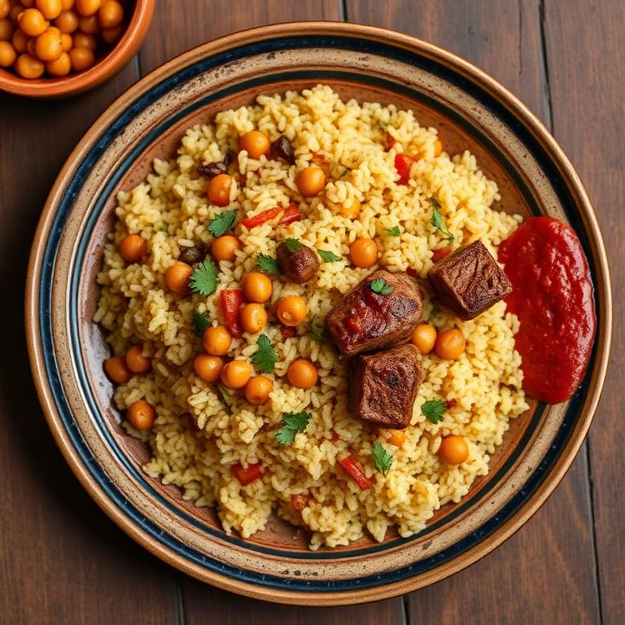

La cuisine tunisienne est un carrefour de saveurs méditerranéennes, mêlant influences berbères, arabes, turques et françaises. Épicée mais subtile, colorée et généreuse, elle reflète l'hospitalité et la convivialité du peuple tunisien.
Les ingrédients de base — huile d'olive, harissa, cumin, coriandre et tomates — composent une palette culinaire riche et variée, où chaque région apporte sa touche unique.

Plat national par excellence, le couscous tunisien se distingue par sa sauce rouge relevée au harissa, accompagné de légumes variés et de viande d'agneau ou de poulet.
Croustillant et doré, le brik est une feuille de malsouka frite, garnie d'un œuf, de thon, de câpres et de persil. C'est l'entrée incontournable du Ramadan.
Soupe populaire à base de pois chiches, parfumée au cumin et à l'ail, servie avec du pain rassis, de l'huile d'olive et de la harissa. Un plat d'hiver réconfortant.
Ragoût de tomates épicé aux œufs pochés, souvent agrémenté de merguez ou de crevettes. Un plat savoureux et coloré typique de la cuisine tunisienne.
Pâtisserie traditionnelle à base de semoule et de pâte de dattes, frite puis trempée dans un sirop de miel. Une douceur incontournable de Kairouan.
Boisson emblématique, le thé vert à la menthe et aux pignons de pin est servi dans de petits verres décorés, symbole d'hospitalité tunisienne.